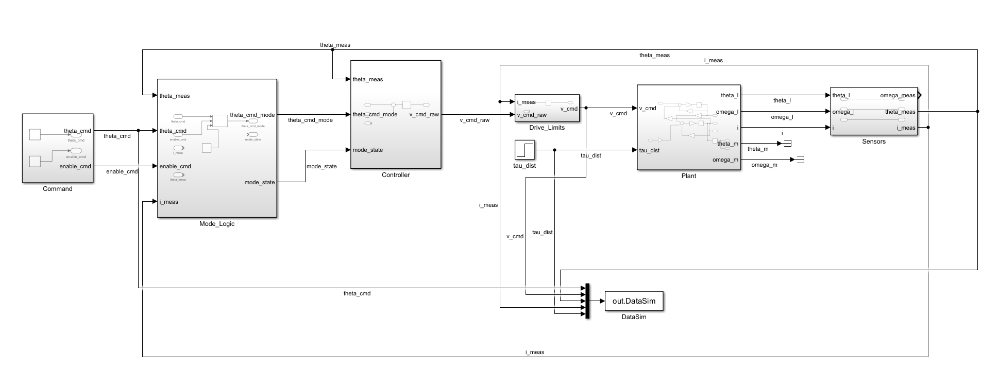
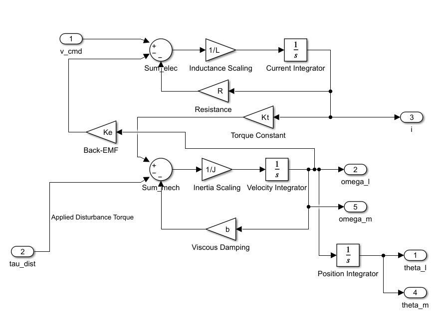
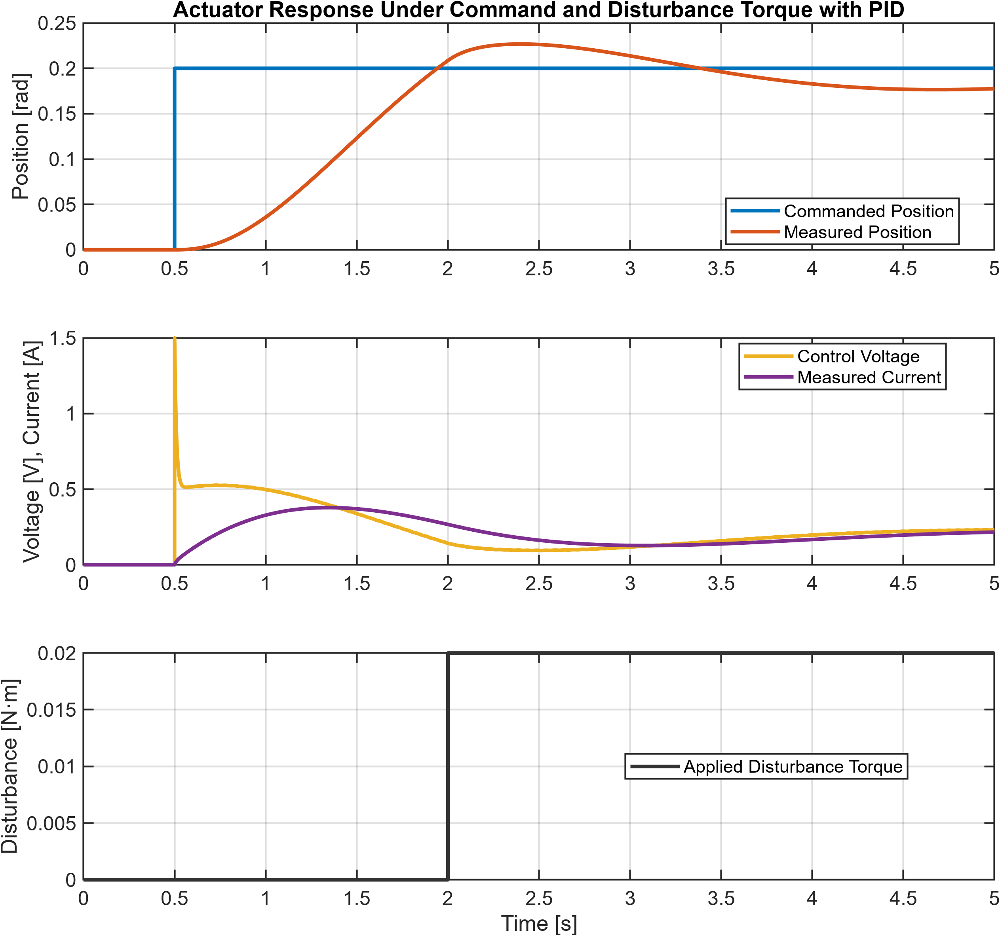
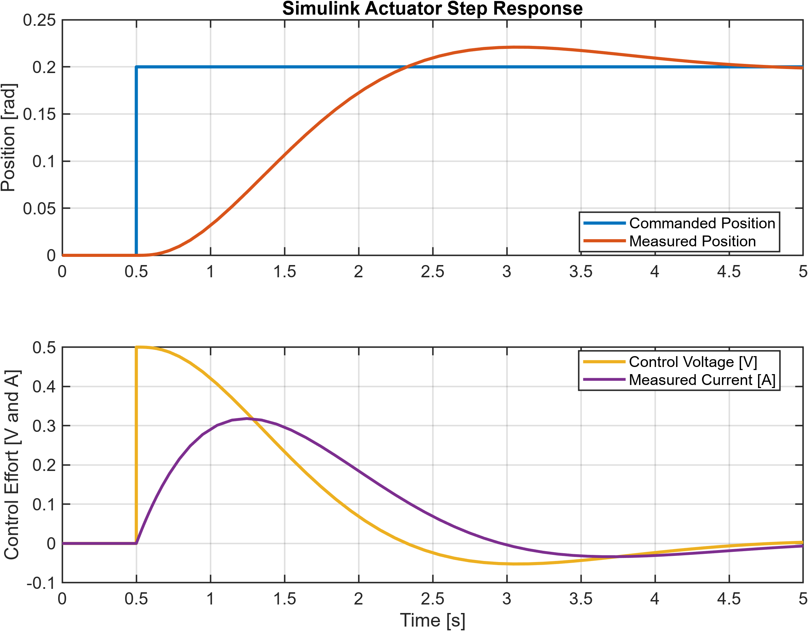
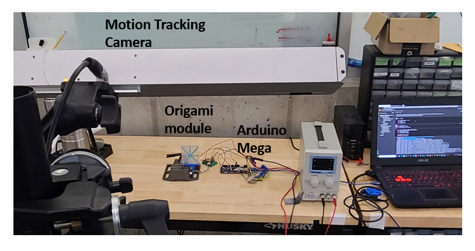
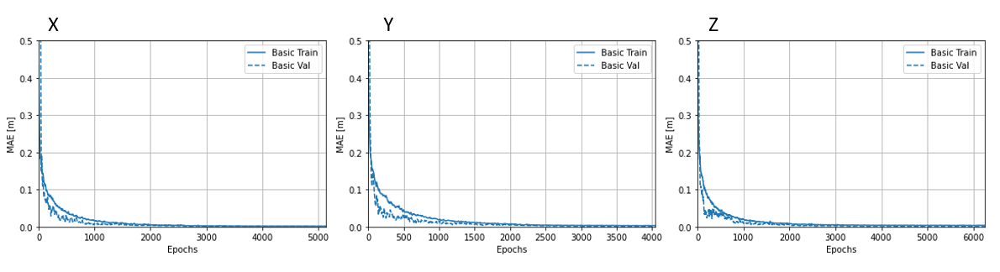
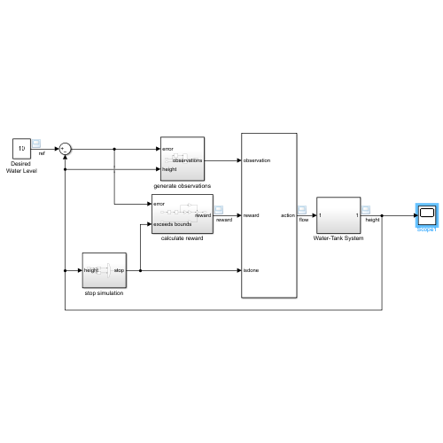
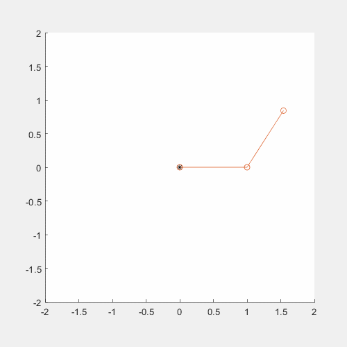

What this page covers
Simulink and model-based workflows are main engineering tools behind the hand work.
The models here are not just screenshots. The portfolio includes the SLX Simulink model, MATLAB parameter file, and live-script figure generator for the standalone actuator-control project, plus selected coursework that show experience with robot learning and dynamics.
- Space actuator: a Simulink model of motor electrical dynamics, torque generation, plant motion, disturbance torque, and PID control.
- Robotic hand: a Simulink tuning surface that sends target angle, PID gains, and torque/current limits to a Python MuJoCo plant server.
- Robot-learning coursework: adaptive-origami position prediction, a Simulink RL water-tank environment, and MATLAB robot dynamics functions.
- Portfolio output: architecture diagrams, plant diagrams, response plots, and the hand Simulink/MuJoCo workflow used for controller tuning.
Source files
Local Simulink and MATLAB files included with the portfolio.
These files are copied from D:\Work\SimulinkPortfolio into the portfolio so the Simulink work is visible as actual model/source material, not only as exported figures.
space_actuator_model.slx
Simulink model for the actuator plant, controller, drive limits, command input, and sensor/feedback path.
actuator_params.m
MATLAB parameter file defining motor electrical constants, mechanical inertia/damping, disturbance torque, and PID gains.
FigureGenerator_LiveScript.mlx
MATLAB live script used to generate the actuator figures and response plots from the Simulink model.
Standalone actuator model
Plant modeling, PID tuning, and disturbance response in Simulink.
The actuator model separates the plant from the controller so the same motion-control questions are visible: what the command is, how the controller drives the actuator, how the plant responds, and how disturbance torque changes the output.
Plant model
DC motor electrical dynamics, torque generation, load inertia, damping, and external disturbance torque.
Controller study
Baseline step tracking, disturbance response, proportional-control limitation, and PID refinement.
Figure workflow
MATLAB scripts and a Live Script generate the architecture diagrams and response plots from the model.




Hand Simulink/MuJoCo workflow
Simulink tuning for the Mujoco hand prior to physical implementation.
For the hand, Simulink sends target position, PID gains, and torque/current-limit commands to a Python MuJoCo plant server over TCP. MuJoCo returns measured position, tracking error, load proxy, and current/torque proxy telemetry so controller behavior can be tuned before hardware transfer.


Supplemental coursework
Applied ML, reinforcement learning, and robot dynamics work that supports the controls story.
These are selected from previous graduate coursework because they connect directly to robotics R&D: collecting physical robot data, building learned predictors, setting up RL environments, and deriving dynamics for multi-link mechanisms.
Motion-tracking ML regression
Adaptive-origami ML project using motion-capture endpoints, heater voltage inputs, encoder-controlled cable actuation, TensorFlow/Keras regressors, and TensorFlow Lite export for compact embedded prediction experiments.
Simulink RL environment
Water-tank reinforcement-learning model with randomized target and initial height, observation generation, reward calculation, action input, stop conditions, and a plant subsystem suitable for training experiments.
Robot dynamics and kinematics
MATLAB robotics coursework implementing PUMA dynamics terms, gravity, Jacobian and Jacobian derivative calculations, plus two-link forward-kinematics animation for mechanism motion studies.



